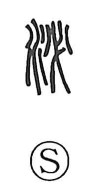

泌

Uncategorized
Kun: | On: hitsu, hi
secretion ・ to secrete
Explanation
泌 is a phono-semantic character: the water radical (氵) sets the realm of liquids, while 必 functions as the phonetic, pointing to the on readings hitsu and hi. The Shuowen describes its core image as a narrow flow—water rushing swiftly through a constricted channel, evocative of the sound of liquid forced through a tight passage. From this image it came to be used for bodily fluids that are produced and discharged, as seen in compounds like 分泌 (secretion) and 泌尿器 (the urinary organs).